Hoe los je dit oefenblad op?
- Open dit oefenblad in Visual Studio 2026.
- De oefeningen vind je in de map Exercises, de opdrachten vind je hieronder
- Vul overal bij de oefeningen de code aan.
- Run het oefenblad en controleer het resultaat
Overzicht van de oefeningen:
- Klik mij
- Welkom
- Chatbox
- Password Validator
- Live Form Validation
- Language Selector
- Order Builder
- Volume Control
- Advanced Visibility Toggle
- Course Registration
- Price Configurator
- OXO
- Select And Move
- Animal Sounds
Alle theorie vind je in WPF Controls.
Klik mij
Doel: werken met een Button en Click event; gebruik van de Hongaarse notatie voor controls.
XAML
Gegeven is de XAML met een Button en een TextBlock.
-
Geef beide controls een naam. Gebruik altijd de Hongaarse notatie voor controls, dus een drieletter prefix die het type control aanduidt, gevolgd door een duidelijke naam:
imgPhoto,txtBericht,inpNaam... Je mag zelf de prefix kiezen, maar zorg dat je overal dezelfde prefixes gebruikt.
Code-behind
- Koppel een Click event toe aan de Button. Dit kan op twee manieren, zie de theorie.
-
Vul de event handler in de code-behind in: toon de tekst "er is op de button geklikt" in de
TextBlock.

Welkom
Doel: gebruik TextBox en Text property.
XAML
- Maak een
Gridmet twee kolommen, de laatste 100px breed, en vier rijen: de eerste tweeAuto, de derde 40px hoog en de vierde de rest. De maximum breedte is 400px. - Voeg de controls toe: 1x
Label, 1xTextBox, 1xButtonen 2xTextBlock. Let er op dat alle controls in de XAML in de juiste volgorde staan! - Geef alle controls een naam; gebruik overal de Hongaarse notatie, dus
btnVerzenden,txtNaam,imgPhoto, etc. - Werk alle controls af met
MarginenPadding. - De foutmelding staat schuin, kleur is
#900; verberg het metVisibility - De tekst onderaan is 16px,
SemiBold

Code-behind, deel 1: tonen welkomsttekst
- Koppel een
Click-event aan de Button. - Vul de code-behind in zodat bij een geldige invoer de tekst Welkom, <naam>! verschijnt (lees de
Textproperty van deTextBox)
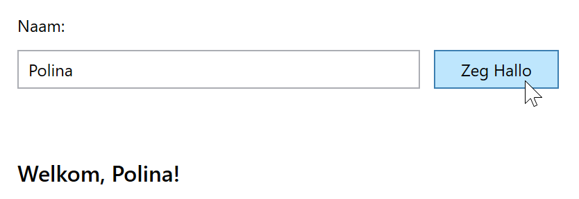
Code-behind, deel 2: validatie en Trim
- Gebruik
Trim()zodat spaties voor en na de naam worden verwijderd. - Controleer of de invoer leeg is of alleen uit spaties bestaat.
- Indien leeg: maak de foutmelding zichtbaar, en zet de tekst onderaan terug naar "...".
- Indien niet leeg: verberg de foutmelding weer.
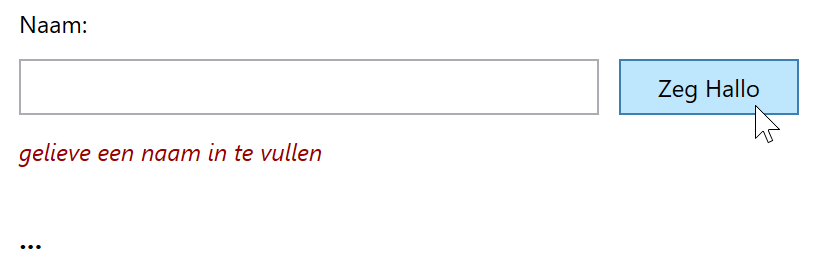
Chatbox
Doel: tekst over meerdere regels van een TextBox met TextWrapping en AcceptsReturn properties. Tekstopmaak in een TextBlock met Bold.
XAML
Het grootste deel van de XAML is reeds gegeven. Vul aan:
- Om in de tweede
TextBoxmeerdere regels te kunnen typen, heb je twee attributen nodig:AcceptsReturn="True"enTextWrapping="Wrap". Voeg ze toe in de XAML. - Voeg een scrollbar toe aan de
TextBlockmetScrollViewer. Let op dat attributen alsGrid.ColumnenMarginnaar deScrollViewermoeten verplaatst worden.
Code-behind
- Koppel een
Click-event aan de Button. -
Vul de event handler in zodat bij verzenden het nieuw bericht rechts verschijnt; wis de velden links.
Tip: om de naam vet te zetten, zie deze uitleg

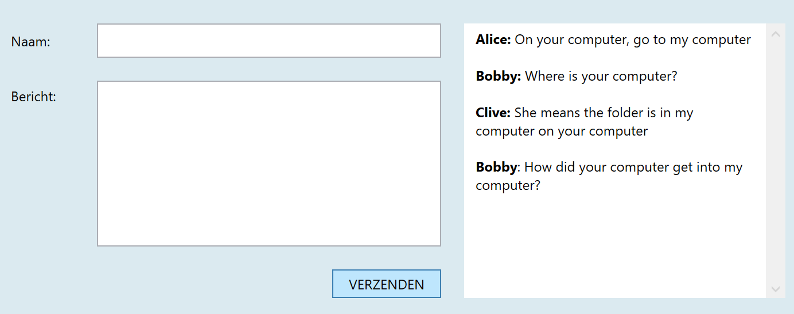
Password Validator
Doel: gebruik TextChanged event.
Theorie
Bouw een eenvoudige wachtwoordvalidator: tijdens het typen wordt gecontroleerd of het wachtwoord voldoet aan de regels. De achtergrondkleur van het invoerveld geeft direct feedback.
Tip: voor de validatie kan je handig gebruik maken van de Linq extensie methode Any(), samen met de char methodes IsLetter(), IsUpper() en IsDigit():
- voeg eerst
System.Linqtoe bovenaan - controle op cijfer kan dan bv. met
if (!password.Any(c => char.IsDigit(c)))...
XAML
De XAML is reeds grotendeels gegeven.
- Voeg enkel nog namen toe voor de
TextBoxenTextBlock(Hongaarse notatie).
Code-behind
- Koppel een
TextChanged-event aan deTextBox. -
In de handler: als het wachtwoord leeg is, zet de achtergrondkleur van de TextBox op wit, en toon geen foutmelding.
tip: gebruikstring.IsNullOrWhiteSpace() -
Als het wachtwoord niet leeg is, controleer dan of het geldig is. Zoja, zet de achtergrondkleur op
LightGreen, zonee zet het opCoralen toon de fouten. Regels voor het paswoord:- minstens 8 tekens lang
- minstens één hoofdletter
- minstens één cijfer
- minstens één speciaal teken (geen letter, geen cijfer)
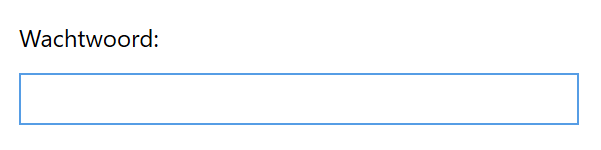
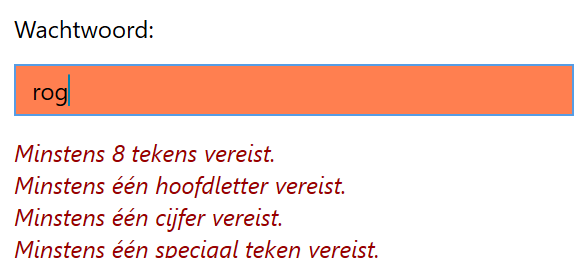
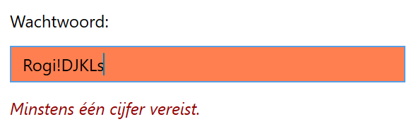
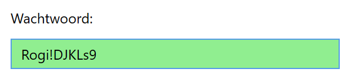
Live Form Validation
Doel: gebruik TextChanged event.
Theorie
Bouw een eenvoudige wachtwoordvalidator: tijdens het typen wordt gecontroleerd of het wachtwoord voldoet aan volgende regels:
- minstens 8 tekens lang
- minstens één hoofdletter
- minstens één cijfer
Tip: voor de validatie kan je handig gebruik maken van de Linq extensie methode Any(), samen met de char methodes IsLetter(), IsUpper() en IsDigit():
- voeg eerst
System.Linqtoe bovenaan - controle op cijfer kan dan bv. met
if (!password.Any(c => char.IsDigit(c)))...
XAML
De XAML is reeds gegeven.
Code-behind
-
Koppel een
TextChanged-event aan deTextBox. -
In de handler: als het wachtwoord leeg is, wis de statustekst en disable de button.
tip: gebruikstring.IsNullOrWhiteSpace() - Als het wachtwoord geldig is, toon de tekst "Geldig paswoord", anders de tekst "ongeldig paswoord".
- De statustekst staat in het groen of rood (
DarkGreenofRed) naargelang het paswoord geldig is of niet. - De button is enkel enabled als het paswoord ingevuld en geldig is.
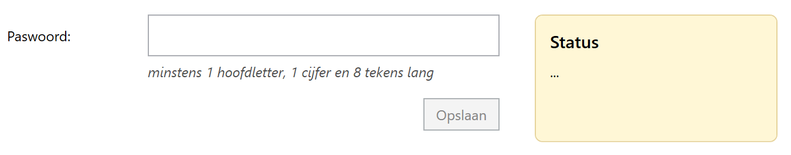

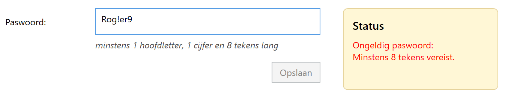

Language Selector
Doel: werken met ComboBox/ComboBoxItem en SelectionChanged event.
Theorie
Lees vooraf de theorie over de ComboBox.
XAML
-
Maak een
StackPanelmet eenComboBoxen eenTextBlock(16px,SemiBold). -
Voeg aan de
ComboBoxeenComboBoxItemtoe met waarde "Kies je taal..."; selecteer het met deIsSelectedproperty.
Code-behind
-
In de code-behind, in de constructor onder
InitializeComponent():- maak een array
languagesmet drie waarden: "Nederlands", "English", "Français" - voeg met
foreachvoor elke taal eenComboBoxItemtoe
- maak een array
-
Voeg een
SelectionChangedevent toe aan deComboBox, waarmee je in deTextBlockeen begroeting toont naargelang de gekozen taal: Hallo, Hello of Bonjour. Gebruik eenswitch-caseop de taal, geen if-else-if. -
Zet het gekozen
ComboBoxIteminBold; zet de andere items terug opNormal.


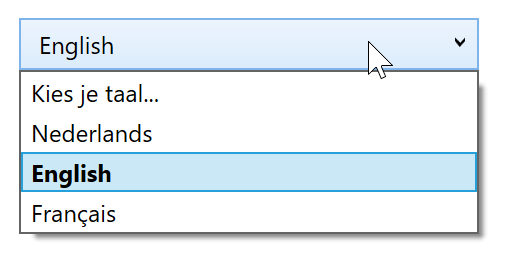
Order Builder
Doel: werken met CheckBox en RadioButton.
Theorie
Lees vooraf de theorie over de CheckBox en RadioButton.
IsCheckedis een nullable boolean:true,falseofnull: controleer meestal zo:chkCheese.IsChecked == true.-
RadioButtons horen bij elkaar wanneer ze dezelfde
GroupNamehebben; je kan dan maar één keuze maken uit die groep.
XAML
Alle margins en paddings zijn veelvouden van 5.
- Maak een
Gridmet één rij en drie gelijke kolommen. - Steek in elke kolom een
StackPanelmet bovenaan telkens eenTextBlockvoor de titel (16px, semibold). - Voeg de overige checkboxen en radiobuttons toe; denk eraan de radiobuttons dezelfde
GroupNamete geven. - Selecteer de eerste en derde checkbox met
IsChecked. - Geef alle controls die je nodig hebt in de code-behind een naam in Hongaarse notatie.
- Voeg onderaan de tweede kolom een
StackPaneltoe voor de twee buttons. - Voeg tenslotte onderaan de derde kolom een
TextBlocktoe voor de samenvattingstekst.
Code-behind
- Koppel aan de bevestigknop een
Click-event. - Lees de gekozen leveringsmethode uit de radio buttons.
- Als er geen leveringsmethode gekozen is, toon de tekst "Kies eerst een leveringsmethode".
- Overloop dan één voor één de checkboxes; steek de aangevinkte keuzes in een
List<string>. - Toon in
txtSummaryeen samenvatting in twee regels naar voorbeeld van de screenshot. - Implementeer tenslotte de resetknop, die alles reset naar de oorspronkelijke toestand.

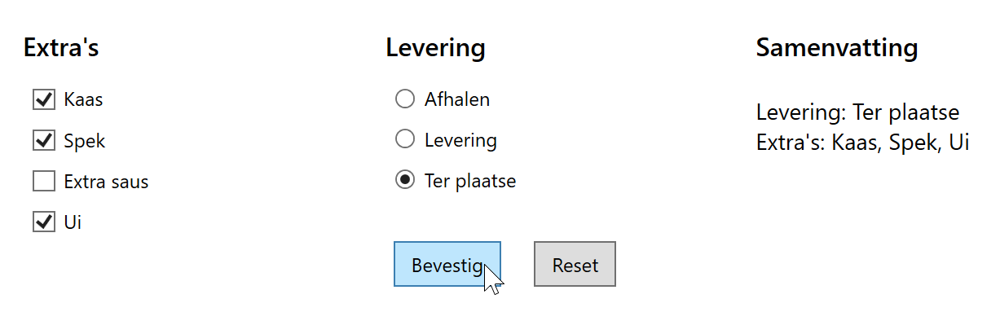
Volume Control
Doel: werken met Slider en ValueChanged event.
Theorie
Lees vooraf de theorie over de Slider. Bestudeer vooral de properties Minimum, Value enz.
XAML
Een groot deel is al gegeven.
- Voeg een
Slidertoe onder deTextBlockmet een bereik 0 tot 100, in sprongen van 5; stel de waarde in op 40. - Geef de drie controls een naam (Hongaarse notatie zoals steeds).
Code-behind
- Koppel het
ValueChanged-event aan de Slider. - Toon de waarde van het volume in de TextBlock.
- Maak de
Bordergroen bij waarden minder dan 20, geel bij minder dan 40, oranje bij minder dan 60, rood bij minder dan 80 en anders donkerrood. - Stel de procentuele breedte van de
Borderin op het volume.
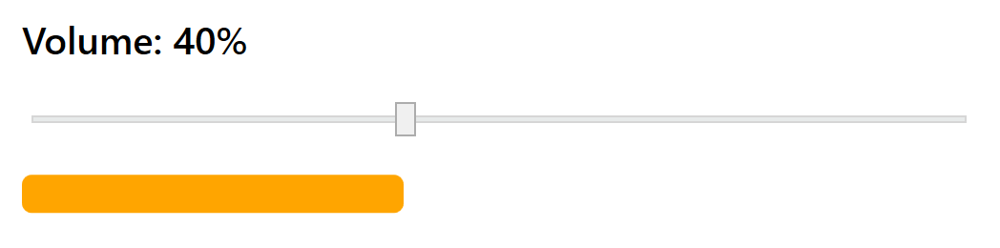
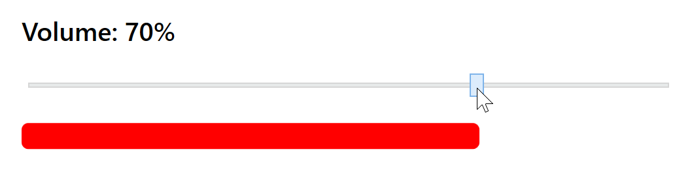
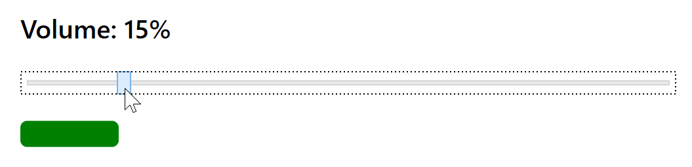
Advanced Visibility Toggle
Doel: een element tonen en verbergen met Visibility; verschil tussen Hidden en Collapsed.
Theorie
In WPF kan je een element verbergen met Hidden of Collapsed.
Hidden: onzichtbaar, maar het element blijft ruimte innemen.Collapsed: onzichtbaar én het element neemt geen ruimte in.
Voorbeeld:
brdDetails.Visibility = Visibility.Hidden;
brdDetails.Visibility = Visibility.Collapsed;Deel 1: UI opbouwen
- Voorzie een
Bordermet naambrdDetailsmet tekst erin. - Voorzie een
CheckBoxchkUseHiddenmet tekst: Gebruik Hidden (neemt plaats in). - Voorzie een
ButtonbtnCyclemet tekst: Volgende toestand. - Voorzie een
ButtonbtnResetmet tekst: Reset. - Voorzie een
TextBlocktxtStatusdat de huidige toestand toont.
Deel 2: Cyclisch wisselen
- Bij klik op
btnCyclewissel je tussen zichtbaar en verborgen. -
Als het element zichtbaar is en je verbergt het:
- als
chkUseHiddenaangevinkt is → gebruikHidden - anders → gebruik
Collapsed
- als
- Als het element verborgen is → maak het terug
Visible.
Deel 3: Status en Reset
- Toon de huidige toestand in
txtStatus(bijv. Status: Visible). btnResetzet alles terug naarVisibleen werkt de status bij.
Course Registration
Doel: meerdere controls combineren; logica centraliseren in één updatefunctie.
Theorie: alles updaten via 1 functie
In deze oefening veranderen meerdere controls de output (TextBox, ComboBox, RadioButtons, ListBox en Slider). Je mag de logica daarom niet dupliceren in elke event handler.
- Maak 1 functie (bijv.
UpdateUi()). - Elke event handler roept die functie op.
- Die functie leest alle waarden uit en werkt de samenvatting en de knopstatus bij.
Voorbeeld:
private void AnyInputChanged(...) { UpdateUi(); }Deel 1: UI opbouwen
txtName(TextBox) voor de naam.cboCourse(ComboBox) met keuzes: C#, JavaScript, Python.-
2 RadioButtons met dezelfde
GroupName:rdoBeginner(Beginner)rdoAdvanced(Advanced)
lstWorkshops(ListBox) metSelectionMode="Multiple".sldDays(Slider) met bereik 1 tot 5.chkTerms(CheckBox) voor akkoord.btnRegister(Button) start disabled.txtSummary(TextBlock) start met ....
Deel 2: Events koppelen
txtNamekrijgtTextChanged.cboCoursekrijgtSelectionChanged.- RadioButtons krijgen
Checked. lstWorkshopskrijgtSelectionChanged.sldDayskrijgtValueChanged.chkTermskrijgtCheckedenUnchecked.- Alle events roepen dezelfde handler op (bijv.
AnyInputChanged), dieUpdateUi()aanroept.
Deel 3: Logica en validatie
- Werk in
UpdateUi()metTrim()op de naam. -
Validatie:
- Naam is minstens 2 karakters.
- Er is een cursus gekozen (
SelectedIndex != -1). - Er is een niveau gekozen (1 van de radio buttons).
chkTermsis aangevinkt.
- Pas als alles geldig is, zet je
btnRegister.IsEnabledoptrue. - Als het niet geldig is: zet
txtSummaryop ....
Deel 4: Samenvatting
-
Toon in
txtSummarydeze info:- Naam
- Cursus
- Niveau
- Dagen (sliderwaarde als geheel getal)
-
Workshops:
- toon alle geselecteerde items uit
SelectedItems - als er geen geselecteerd is: toon geen
- toon alle geselecteerde items uit
Deel 5: Inschrijven
- Bij klik op
btnRegistertoon je eenMessageBox: Inschrijving voltooid!
Price Configurator
Doel: meerdere controls combineren (ComboBox, CheckBox, Slider) met een gecentraliseerde berekeningsfunctie.
Theorie
In deze oefening zullen meerdere controls de UI kunnen aanpassen (ComboBox, CheckBoxes en Slider). Je mag de berekeningslogica daarom niet dupliceren in elke event handler.
- Maak één aparte functie (bijv.
UpdatePrice()). - Elke event handler roept die functie op.
- Die functie leest alle waarden uit en werkt de UI bij.
Deel 1: UI opbouwen
- ComboBox
cboProductmet items: Basic, Plus, Pro. - CheckBox
chkSupportmet tekst: Support (+2 per stuk). - CheckBox
chkGiftWrapmet tekst: Gift wrap (+1 per stuk). - Slider
sldQtymet bereik 1 tot 10. - Button
btnOrder(start disabled). - TextBlocks voor output:
txtLine1,txtLine2,txtLine3,txtTotal,txtDelta.
Deel 2: Prijs berekenen
- Basic = 5 per stuk, Plus = 8 per stuk, Pro = 12 per stuk.
- Extra's zijn per stuk: Support +2, Gift wrap +1.
- Totaal = (basis + extra's per stuk) × aantal.
- Toon een samenvatting in de output.
Deel 3: Gedrag
- Als geen product gekozen is: zet
btnOrderdisabled en toon geen totaal. - Elke wijziging (ComboBox, CheckBox, Slider) moet de output live updaten.
- Toon ook het verschil t.o.v. de vorige berekening in
txtDelta.
OXO
Doel: werken met het sender object.
Theorie
Bouw een eenvoudig OXO-spel waarbij afwisselend "O" of "X" verschijnt. De winnaar bepalen is niet zo eenvoudig en maakt geen deel uit van deze oefening.
Meerdere controls kunnen dezelfde event handler gebruiken. In de event handler is sender de control die het event veroorzaakte (zie theorie).
We gebruiken het in deze oefening om één Click-event aan de 9 buttons te koppelen.
XAML
Gegeven is een 3x3 Grid met buttons.
-
Voeg een
Clickevent toe aan de eerste button. Hernoem de event handler naarOxoButton_Click(gebruik de rechtermuisknop). -
Kopieer in de XAML het
Clickattribuut met verwijzing naar de eventhandler naar de andere 8 buttons.
Code-behind
- In de event handler vraag je eerst de button waarop geklikt werd op via het
senderobject. Toon afwisselend een 'O' of 'X'. Disable telkens de button.

Select And Move
Doel: gebruik ListBox/ListBoxItem met het SelectionChanged event.
Theorie
Lees eerst grondig de theorie over de ListBox.
Een ListBox toont een lijst met items. In theorie kan een item van alles zijn, zelfs een zuivere string,
maar maak er een goede gewoonte van enkel objecten van het type ListBoxItem toe te voegen. Gebruik verder properties als Items, SelectedItem en SelectedIndex, en het SelectionChanged event.
XAML
Een gedeelte van de XAML is al voorzien.
- Voeg twee ListBoxes toe: een listbox links met startitems C#, Java, JavaScript, Python, SQL; en een lege listbox rechts.
- Disable beide buttons met
IsEnabled.
Code-behind
-
Voeg een
Click-event toe aan elk van de buttons. Bij klik:- vraag het geselecteerde item op met de
SelectedItemproperty - verwijder dit item uit de geselecteerde lijst met
Remove() - voeg dit item toe aan de andere lijst met
Add()
- vraag het geselecteerde item op met de
-
Zorg er nu voor dat de buttons enkel enabled zijn als een item in de relevante lijst geselecteerd is:
- voeg aan beide
ListBox-en eenSelectionChangedevent handler toe; gebruik dezelfde event handler voor beiden - stel de button states in: de bovenste button is enabled als er een item links geselecteerd is, en analoog voor de onderste button
- voeg aan beide


Animal Sounds
Doel: media toevoegen aan je project; gebruik SoundPlayer; gebruik Tag property.
Media toevoegen aan je project
We tonen vier afbeeldingen van dieren; bij een mouse over klinkt het geluid van dat dier.
- Maak in de folder Exercises twee subfolders: Images en Sounds.
- Sleep daarin de geluiden en de afbeeldingen meegegeven bij deze oefening (zie Toledo).
- Stel geluiden en afbeeldingen in als content, en laat ze mee kopiëren naar de output directory, zie deze uitleg.
XAML
-
Maak een horizontale
StackPanelmet daarin vier afbeeldingen metImage; stel hoogte en breedte in op 100px. -
Voeg aan elke
ImageeenTagattribuut toe met het pad naar het af te spelen geluid.
Code-behind
-
Voeg dezelfde
MouseEnterevent handler toe aan de vier afbeeldingen (eenImagekent geenClickevent). -
In de event handler: speel het geluid af met
SoundPlayer, zie deze uitleg.